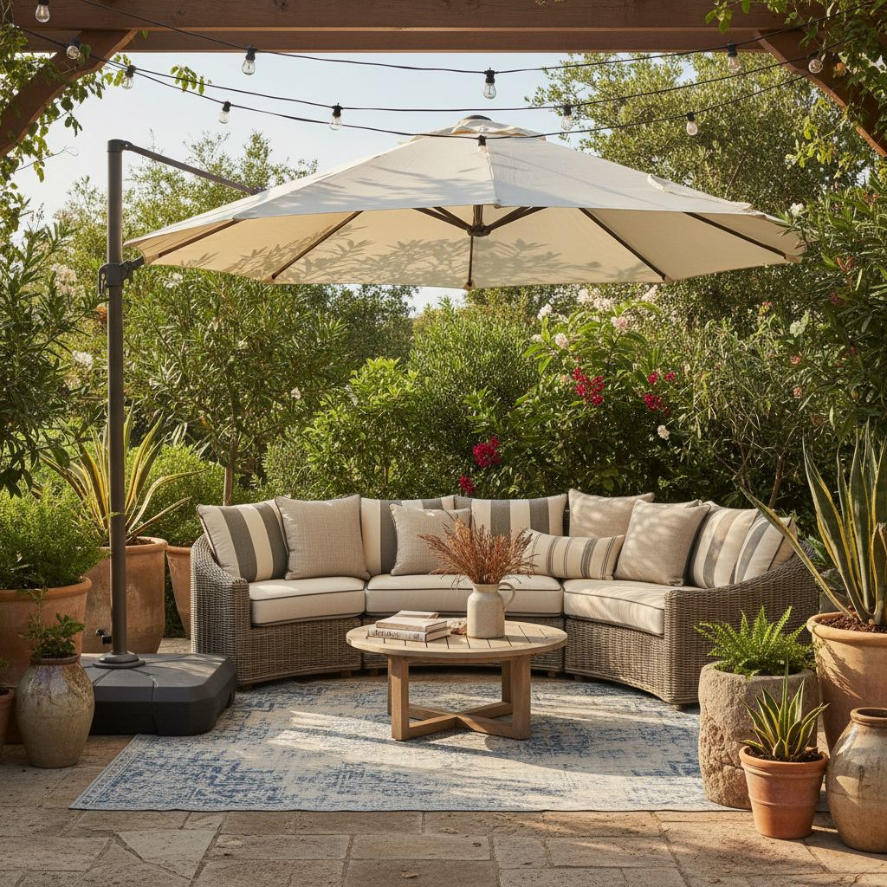

Outdoor Patio Styling Guide: Furniture, Rugs, and Light

The patios that work best are the ones designed like living rooms — with a focal point, a seating group, a rug, and layered light. The difference is materials.
Treat it like a room
Pick a focal point (a view, a fire feature, or a wall-mounted planter), orient seating toward it, and add a low table in the middle. This is the same formula as an interior living room.
Weatherproof materials
Teak, powder-coated aluminum, and marine-grade rope all age gracefully outdoors. Skip anything with untreated softwood or exposed staples. For cushions, choose solution-dyed acrylic covers rated for outdoor use.
Light for evenings
One string of overhead lights, a pair of lanterns at seat level, and a small candle or two on the table creates the same three-height layering that works indoors.

Incorporating Dynamic Shade Solutions
Don't let harsh sun or unexpected drizzles dictate your patio’s usability. Strategic shade is paramount. For larger patios (12x12 feet or more), a cantilever umbrella offers unparalleled flexibility. Look for a 10-foot or 11-foot diameter model, often starting around $300-$600, with a sturdy base (at least 150 lbs for wind resistance; some require sand or water filling). The offset pole design allows for unobstructed seating arrangements. For compact spaces or specific seating zones, a market umbrella (typically 7-9 feet in diameter, $150-$350) paired with a table is ideal. Ensure the umbrella pole diameter matches your table's umbrella hole. For a more permanent, architectural solution, consider a pergola. A basic 10x12-foot aluminum pergola kit can range from $800-$2,500 and provides a framework for climbing plants or retractable canopy systems, offering both aesthetic appeal and customizable shade. Remember to check local building codes for permanent structures.
Curating Your Greenery: Pots, Plants, and Placement
Plants are the ultimate organic decor, softening hardscapes and introducing vivacity. Select planters that complement your existing furniture. For modern aesthetics, consider matte black ceramic or lightweight fiberstone pots (e.g., a 20-inch diameter pot for a large fern, around $60-$120). For a more traditional or Mediterranean feel, terracotta or glazed ceramic in earthy tones work beautifully. Grouping planters of varying heights creates visual interest. For instance, a tall, narrow planter (24-30 inches high) with a structural plant like a Split-Leaf Philodendron, flanked by two medium, wider pots (16-18 inches diameter) holding petunias or trailing ivy. Drought-tolerant options like succulents, lavender, or ornamental grasses minimize maintenance. For shade-prone areas, hostas or impatiens thrive. Ensure all pots have drainage holes to prevent root rot. Strategically placed tall plants can offer a sense of privacy or break up a long wall. Aim for a mix of foliage textures and flower colors to maintain interest throughout the season.
Defining Zones with Accessories and Layout
Even without walls, your patio can have distinct zones for dining, lounging, or conversation. The key is in thoughtful accessory placement and furniture grouping. Use a large outdoor rug (e.g., an 8x10 or 9x12 for a seating area) to anchor the lounge space, with all front legs of the sofa and chairs resting on the rug. Place a generously sized coffee table (24x48 inches for a sectional) in the center, leaving 18-24 inches of clearance to seating for comfortable movement. For a dining area, position the table centrally to allow at least 30 inches of space behind each chair for easy movement. Add weather-resistant throw pillows (Sunbrella fabric is an excellent, durable choice, $30-$70 per pillow) in coordinating colors to infuse personality and comfort into your lounge furniture. Outdoor artwork, either weather-resistant prints or metal sculptures, can define a focal point on a blank wall. Small, portable garden stools or poufs (starting around $50) serve as versatile extra seating or side tables.
Common Patio Styling Pitfalls to Avoid
Over-furnishing a Small Space
A common mistake is cramming too many pieces into a compact patio. Measure your space precisely. For a 6x8 foot balcony, two bistro chairs and a small table (24-inch diameter) are perfect; a full lounge set will overwhelm. Always leave clear pathways – aim for at least 30 inches for comfortable movement. Oversized furniture in a small area looks cluttered, not luxurious.
Neglecting Scale
Ensure your decor pieces are proportionate to your furniture and the overall patio size. A tiny potted plant will get lost next to a large sectional sofa. Conversely, a massive planter might dwarf a dainty bistro set. Varying heights and scales create visual interest, but extremes can look jarring. Aim for a balanced composition.
Ignoring the View and Surroundings
Your patio isn't an island. Consider what lies beyond its borders. If you have a beautiful garden or a scenic view, arrange furniture to face it. Avoid placing tall furniture or screens that block desirable views. If the view is less than ideal, use strategic planting (tall planters or trellises) or decorative screens to mitigate it, but always plan with the existing environment in mind. Also, consider noise; soft furnishings can absorb some sound.
Skipping Storage Solutions
Without proper storage for cushions, throws, and small decorative items during inclement weather or off-season, your patio can quickly become dishevelled. Invest in a weather-resistant storage bench or a deck box (a 99-gallon resin deck box often costs $100-$250 and can hold multiple cushions). Clutter instantly detracts from a well-styled space. This not only keeps things tidy but also prolongs the life of your textiles.
Finally, treat your patio as a space that changes with the seasons rather than a fixed installation. Rotate cushions and throws twice a year, move planters as the sun angle shifts, and store soft goods somewhere dry between uses so they last several summers instead of one. Keep a small basket or deck box within reach for candles, coasters, bug spray, and a folded blanket — the difference between a patio you use twice a season and one you use twice a week is almost always how little effort it takes to sit down and stay a while.
Key takeaways
- Design a patio like a living room.
- Choose materials rated for outdoor use.
- Layer light at three heights, warm bulbs.
Frequently asked questions
Do outdoor rugs really hold up?
Polypropylene outdoor rugs handle sun and rain well and dry quickly. Bring them in for winter to double their lifespan.

Sophia Bennett is a certified interior stylist and the senior editor at Styleire. She has spent more than eight years helping homeowners and renters create warm, functional interiors, with hands-on experience across small city apartments and family homes. Her work has been informed by close collaboration with independent designers, craftspeople, and product testers.
View full profile →Related reading

Small Balcony Decor Ideas: Turn 30 Square Feet Into a Room
A small balcony is not a wasted balcony. With three good choices, it becomes another room.